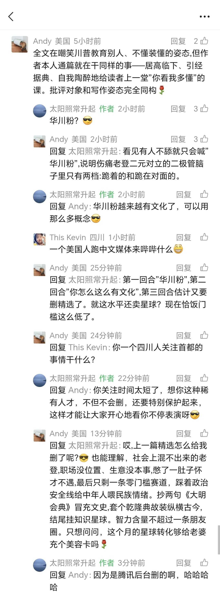

川普又来了，中美关系最特别的时候，专门为身在美国的读者写一篇。
根据后台数据，本公号有5,200多位身在美国的读者。按读者人数排序，最多的地区分别是北、上、深、广、杭、蓉，然后就是美国了，妥妥的G7。
海外读者的整体水平和素质比较高，作者也因为这个公众号结识了一些海外读者朋友，有名校教授，大厂高管，花街投资人，也有就读于美国的学生，甚至还有一些原籍台湾、身在欧美的读者。作者也被拉入一些海外华裔群，可以看到一些海外华裔讨论的日常。
七八年前，中美贸易战风起云涌的时候，作者曾经问一位藤校华裔老教授，哈佛耶鲁这样的学校曾经有不少知名汉学家，为中美彼此相互了解、理解做出过巨大贡献，现在他们还能发挥作用吗？回答是，曾经那代人大部分已经作古，新生代，也不再有曾经那样的心气和想法。
美国的社科研究，受其本土社会经济环境变化影响非常大，世界不再是平的，关于不平的研究，越来越多。几年前，作者以“再全球化”定义这个时期，归纳为“国与国之间的不平等，与一国内部的不平等”，最初的思考，主要就是来自美国内部的自我再评价，再由此延伸到全球。
身处这样的时代，大概也就能理解，为何在川普一期，连余茂春这种人都能上位。G2花了多年，从川普一期，到二期，来重新了解彼此。这次的尝试，不再是基于文化上的包容，也不再是基于彼此合作针对地缘关系的第三方，而是基于彼此实力和产业链依赖的重新认识。这个过程，改变了很多人对世界的认知。
从丛林，到文明，需要一个很长的时间。彼此实力的昭示、制衡，是形成新的稳态的前提。互探底线，划定红线，是必由之路。
大家都身不由己地变成了这个过程中的一员，无论身处此岸还是彼岸，这个时代背景，大家都跑不掉。
作者曾经问过一些在美华裔，为何美国华裔不能像印度裔那样，能够深入美国社会经济各个领域？为何无论在政治方面还是在经济方面，华裔的影响力都显著弱于印度裔？要知道，美国印度裔的人口数量是比华裔还要少一些的。
从美国政治领域看，大陆华裔参政议政的意愿虽有增强，但相比而言，还是很弱。从经济领域看，美国半导体大企业，除Micron外，目前都是华裔掌舵，但没有一个是大陆华裔出身。美国半导体大企业与台湾其实有千丝万缕的历史联系，这跟国民党当年在台发展半导体产业有直接原因。无论在美还是在台，除极个别外，半导体企业的掌舵人主要都是蓝营或者蓝营后代。但到AI时代，可以发现，华裔又沦为高薪打工人，而不是企业掌舵人了。
几年前，有一位台湾眷村长大，后来移民美国、长期从事半导体产业的读者老先生，问作者，为何很多美国的大陆华裔对大陆抱有那么大的敌意，甚至都到了无法理解的程度？他在台湾长大，后来去了美国，对大陆的了解和理解，自然也不会特别好。但他在工作中，与大陆企业合作、竞争多年，也经常往来三地，能够明显感觉大陆的巨大变化。但一些大陆裔移民，无论任何事，都把大陆贬得一无是处，他难以理解，这种无知与仇恨，从何而来。
作者略加思考，当时的回复是，有三个时期，大陆华裔去美国的一些人，对故土是带着仇恨的。一是文革后，二是90年代初，三是前几年反腐后。
前两个时期，虽已是远去的历史，但阴魂不散，否则川普一期，余茂春之流不会在美国民粹主义袭来时，再被执政者搬出来。川普试完后，发现就是一个蒋干，彻底抛弃了。
第三个时期，离当前最近，也是华川粉的主要来源。华川粉与在美的台湾绿营、港独是可以深度捆绑的，因为他们有共同的“恨”，甚至超越了常人的逻辑。
这个华裔内部的历史，华人都不能完全理解，更不要说真老外了。
这当然说的都是极端的华裔群体。
还有大量并不极端，也可能比较优秀，只是因自己的人生选择，而前往美国的。美国对全球尖端人才的吸引力是无与伦比的，每个时期热门行业的收入，都远远超过其他国家。例如当前的AI，尖端人才的年薪动辄千万美元以上，甚至过亿美元都有，这是其他任何国家的企业都支付不起的。
美国的“金融+科技创新”环境会不断吸引全球顶尖人才前往，产学研的高效结合，从0到1元认知的突破，改变世界的愿景、目标与能力，都仍然会长期在线。
但问题在于，如果华裔仍然不能深度参与美国的政治与社会活动，仅有科技大脑、学习能力优势，就会在批判“优绩主义”的过程中，在民粹主义的浪潮下，被当做最容易分裂和欺负的族群。
美国是一个移民国家，族群问题是天生的。没有一个族群，不靠斗争就能生存。族群与政治代言人挂钩，政治代言人与政策制定者挂钩，政策制定者在很大程度上又要影响不同族群的权益。
犹太裔只比华裔多200多万，就可以经略美国政治；印度裔比华裔还要少，就可以掌控美国大企业。拉美裔和印度裔政客联手，成了强硬的反华派。前几年台湾去的还幼稚的认为自己跟美国是“盟友”，直到川普明示要搬走台积电，才知道自己原来不过是一张抹布。
作者不知道印度裔在移民以后是否还每天在印度社交媒体朋友圈里冷嘲热讽，也不知道犹太裔是否每天都热衷评判以色列的人和事。移民与母国确有联系，但究竟应当是怎样一种联系呢？
作者朴素的认为，作为优秀的移民，首先要在新的家园扎根，成为其中的一员，不能在母国吸完资源，又跑到人家那里去吸，等人家那里吸不到了，又想着回来继续吸。这种国际人的好时代，已经结束了。难道还不理解吗？
为什么曾经的国人对去南洋创业的老华侨没有这种感受和评价？对早年去美国打工的华裔没有这种评价？因为当年他们在海外打拼是真苦，成功后对故土父老乡亲的回馈是真多。你能说那个时代的故土比现在更好？
老百姓心中有杆秤的，他们不会觉得钱学森有任何问题，不会觉得陈嘉庚有任何问题，不会觉得再美国留学有任何问题，甚至就是移民，他们也不会觉得有任何问题。但如果你明明是占了母国的红利才走掉的，甚至是贪腐之后，不但不反思、不回馈，还要每天对母国的老百姓指手画脚，人家不骂你，可能吗？
如果已经移民，就应当在当地扎下根，融入当地社会、经济、政治和文化，积极参与当地的社会事务，更公允的看待当地的各种社会问题，用自己的聪明才智去帮助解决当地的问题，而不是每天身在欧美，声在微信、微博、知乎、抖音，天天在简中圈发泄情绪。
否则，大家只能认为，你没有能力融入当地。一代移民当然有各种苦楚，但有些苦楚，纯属自找的。
无论出于什么原因，既然你已经放弃身在母国努力，那母国的各种事，其实与你的情绪，就没有丝毫关系。你每天在简中社交媒体发言，如果言之有物，当然很有意义，但如果只有情绪宣泄，只能被贴上“精美”、“精犹”、“精日”各种标签。明明来了就是挨骂，还要每天来，是否应该去看看心理医生，自己的受虐倾向为何如此强？这样的移民，能叫成功吗？这其实都不叫移民，叫逃亡可能更准确。
身在曹营心在汉，也不知道是历史，还是现实，是批评，还是赞美。
比如，昨天《合则两利，来就是赢》这篇，不过是调侃两句，其实都没有批评川普，主要针对的还是赖清德，但一位加州的读者就坐不住了

很显然，这种每天在简中圈打嘴仗的华川粉肯定不是什么优秀人才，大概率，是第三时期的移民，也可能是走线过去的。他甚至可能都没有语言能力去X上捍卫川普，因为X上还有大量的民主党粉丝，人家可不脑残，所以，就只能每天在简中圈找存在感了。
但在美国的正常华裔，如果每天在美国默不作声，就图自己过一个小日子，那这种每天在网上说个不停的脑残华裔，就会逐渐成为大陆老百姓眼中的“美国华裔”的代表，也完全有可能成为美国老百姓眼中的“整个华裔”的代表。
为什么很多海外华裔前两年觉得大陆老百姓对自己越来越不友好，因为你们平时在简中圈不说话、不留言，而留言和说话的这些华裔，以上面这种无脑挑衅的居多。大家一看IP，就自然定位了。这不是地图炮或者地域歧视，这是“所见即所得”。
这就是互联网舆论时代，谁的声音大，谁不停说，大家就会认为他讲的是客观现实。所以作者一直讲，你要发声，如果你的群体一直不发声，就一定会被别人代表，不会有好结果。
G2，基于实力的较量，会重新定位彼此，在有管控的前提下继续竞争，甚至还可能继续出现一定程度的对抗。
对个体，这不是简单的站队问题，而是时代的背景。
作者建议所有移民和准备移民海外的华裔，都认真读一下目标国的族群与政治的历史，甚至哪怕只是去留学，也应该读一读。这方面作者读得很少，也就读过索维尔关于美国少数族裔历史的著作，收获非常大。但作者毕竟不需要在美国生活，如果你自己、家人，都要在美国生活，那你就需要更全面地了解当地的族群历史和政治文化边界，毕竟，美国不是个福利国家，你是去奋斗的，美国没可能让你躺平。这种奋斗没可能只是经济上的，一定会跟族群政治发生关系，而这又是大陆华裔最没有经验的部分。把川普当圣上的，去了各种表忠心的，有多被老一代华裔和其他族群看不起，他们自己都不知道。不是身体离开了，脑子就变了。就像辜鸿铭讲的：“诸君的辫子在心中”。
当然，作者认为，上述情况，在美国读者而言，仍是极少数。作者希望，海外总计过万的读者，能够多提供有质量的留言，让大家多听听海外真实的声音。作者相信，这对增进海内外同胞的相互理解，肯定是会有很大助益的。
感谢并继续欢迎跨时区的关注。
以上。
闻人所未闻，欢迎加入作者的知识星球！